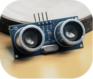

O SafraScan é uma solução tecnológica desenvolvida
para auxiliar produtores rurais no monitoramento
inteligente de suas plantações. Por meio da integração
entre sensores e tecnologia, o sistema permite
acompanhar condições importantes da lavoura,
contribuindo para uma gestão agrícola mais eficiente.

Com o monitoramento das condições do solo e do ambiente,
o SafraScan oferece informações que auxiliam na tomada
de decisões durante o ciclo de cultivo. A plataforma
busca facilitar o acompanhamento dos plantios,
identificar possíveis alterações e gerar recomendações
para contribuir com a produtividade e o uso consciente
dos recursos agrícolas.